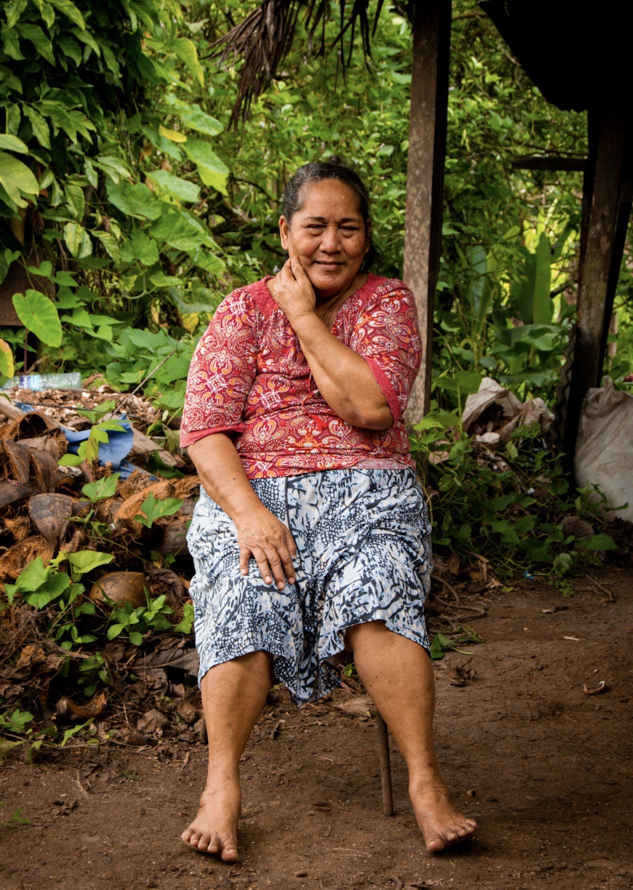
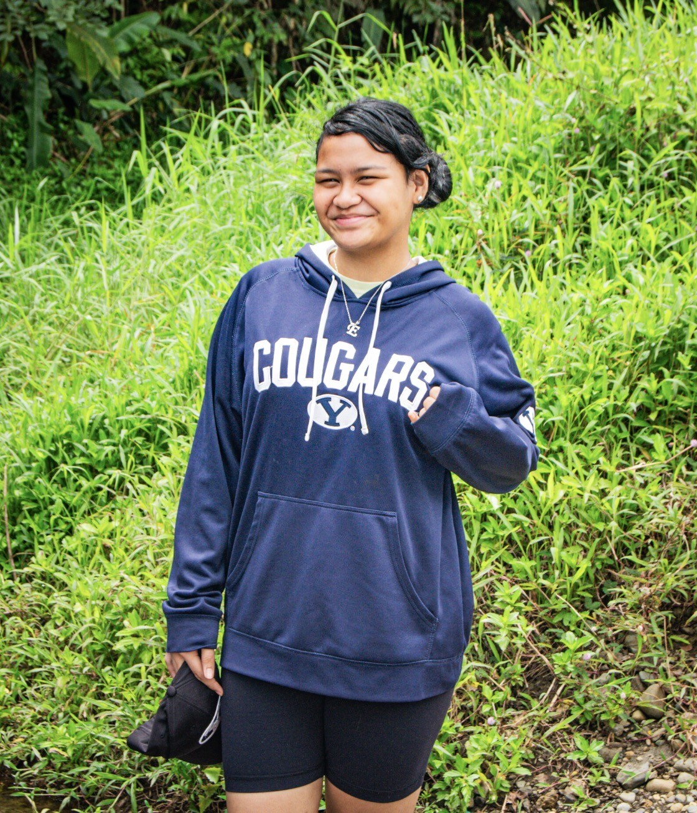

About Akanisi
Love From Rotuma began with family, resilience, and community. After the loss of both her husband and mother within a short period, Akanisi looked for a way to reconnect with her community while sharing the sewing skills she had developed throughout her life.
What began as making dresses for family and friends has grown into Love From Rotuma — a business dedicated to creating beautiful handmade clothing while supporting Rotuman women and celebrating island craftsmanship.
Every dress that leaves the shop in Wailoku carries a little bit of that story — made by hand, made with care, and made to be worn with pride.


Emerald
Emerald is part of the Love From Rotuma team, helping with customer orders, preparing fabrics, and supporting the day-to-day work that brings each handmade dress to life.
As a young Rotuman woman with aspirations of attending BYU–Hawaiʻi, she represents the next generation of our community, combining traditional values with future opportunities.
Be part of the story
Every order supports a small business rooted in family, resilience, and the craftsmanship of Rotuman women.
Start Your Custom Order